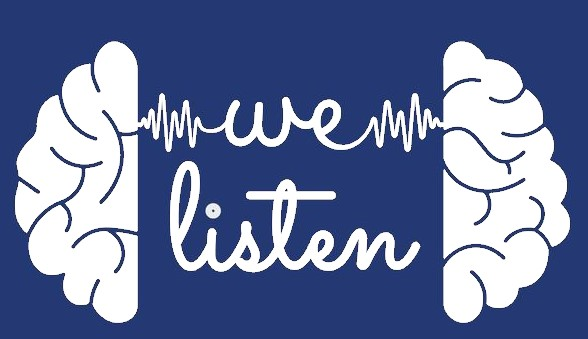

   
<style>
    a:hover{
      text-decoration: none !important;
    }
    .bg-custom{
      background-color: #253972;
  }
  .navbar-brand{
      color: #f9f9f9!important;
      font-weight: bold;
      margin-left: 2%;
  }
  .head-image{
      width: 5%;
  }

  .nav-link {
      color: #f9f9f9 !important;
      margin-right: 20px !important;
      
  }

  .volunteer-btn{
    
    background-color:#f9f9f9 !important ;
text-align: center;
    border-radius: 30px;
    font-weight: bold;
    padding: 0 5px;
    margin-right:20px;
  }

  .volunteer-btn:hover{
    
    background-color:#f9f9f9ce !important ;
  }

  .volunteer-link{
    color: #253972 !important;
    margin-right: 0px !important;
  }


  @media only screen and (max-width:600px){
.head-image{
  width:20%;

}

.navbar-toggler{
 right: 0;
}

.navbar-brand{
  display:none;
}

.volunteer-btn{
  margin-right: 0;
}
  }
  
  </style>
  
  <nav class="navbar navbar-expand-md fixed-top  bg-custom">
    
    <a class="navbar-brand" href="index.html"> We Listen Foundation</a>
    <button class="navbar-toggler"  type="button" data-toggle="collapse" data-target="#navbarText" aria-controls="navbarText" aria-expanded="false" aria-label="Toggle navigation">
      <!-- <span  class="navbar-toggler-icon"></span> -->
      <i class="fa fa-bars" style="color: #f9f9f9"></i>
    </button>
    <div class="collapse navbar-collapse text-center justify-content-end" id="navbarText">
      <ul class="navbar-nav">
        <li class="nav-item active">
          <a class="nav-link" href="index.html">Home</a>
        </li>
        <li class="nav-item active">
          <a class="nav-link" href="campaign-3S.html">Initiatives</a>
        </li>
 
        <li class="nav-item">
          <a class="nav-link" href="aboutUs.html">About Us</a>
        </li>
        <li class="nav-item">
            <a class="nav-link" href="contactUs.html">Contact</a>
          </li>
          <li class="nav-item active volunteer-btn">
            <a class="nav-link volunteer-link" target="_blank"  href="https://docs.google.com/forms/d/e/1FAIpQLSdQjerTy8sE-mfRtfm6JiohE1UZQFBzbffnf20xpwp_T7pDKw/viewform">Volunteer</a>
          </li>
      </ul>
    </div>
  </nav>
